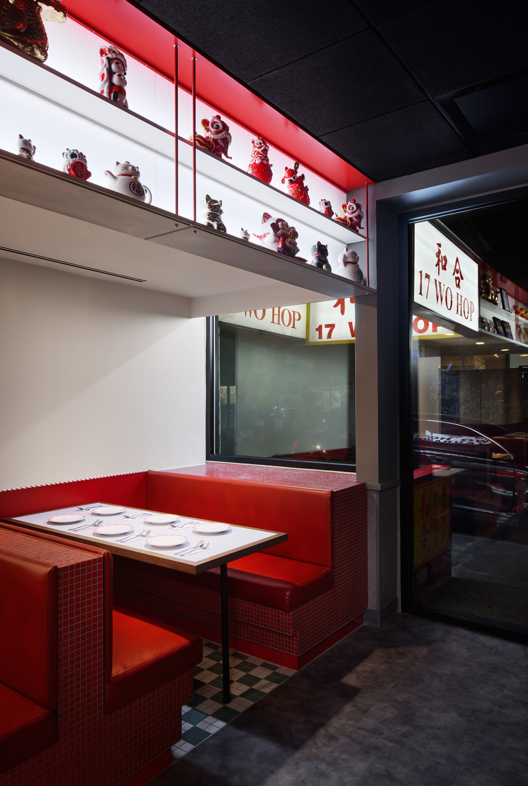
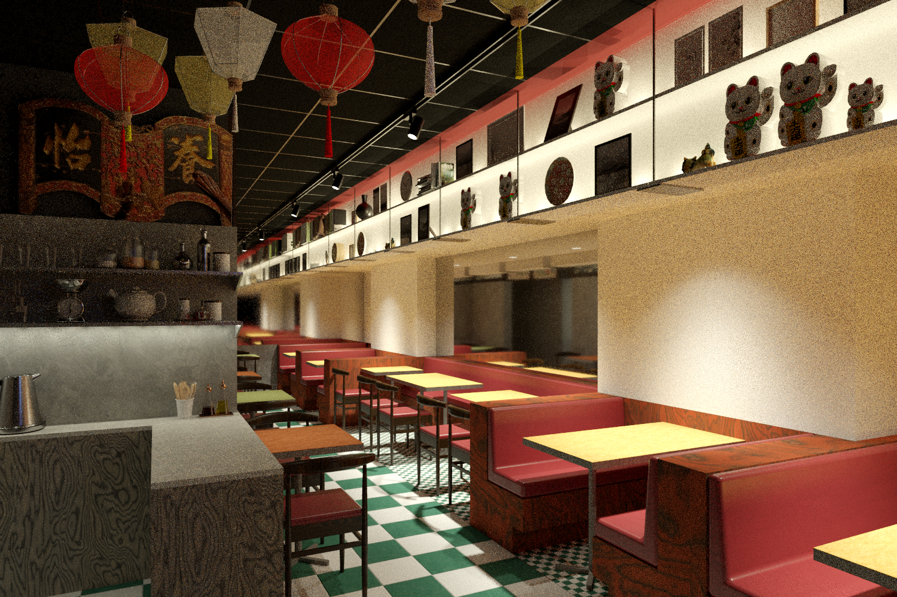
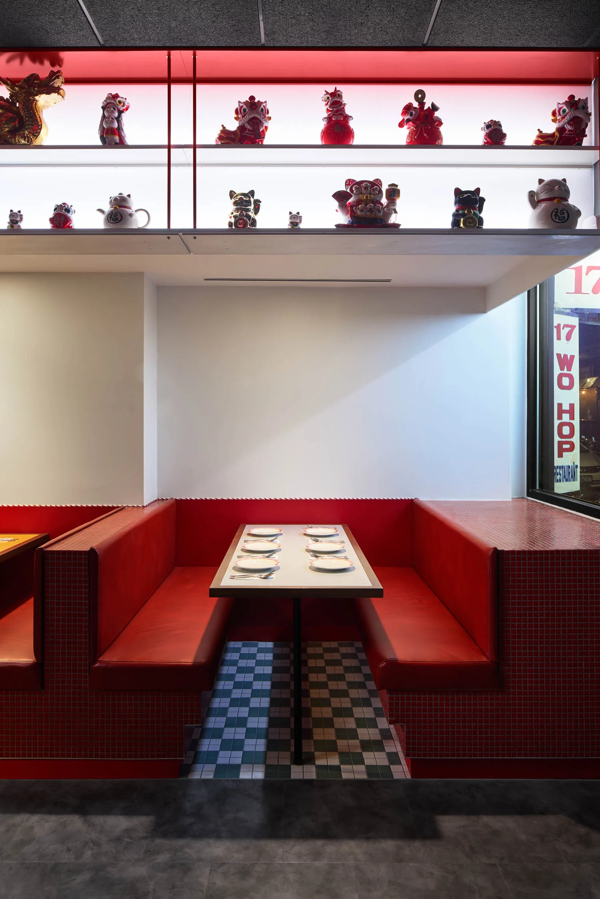
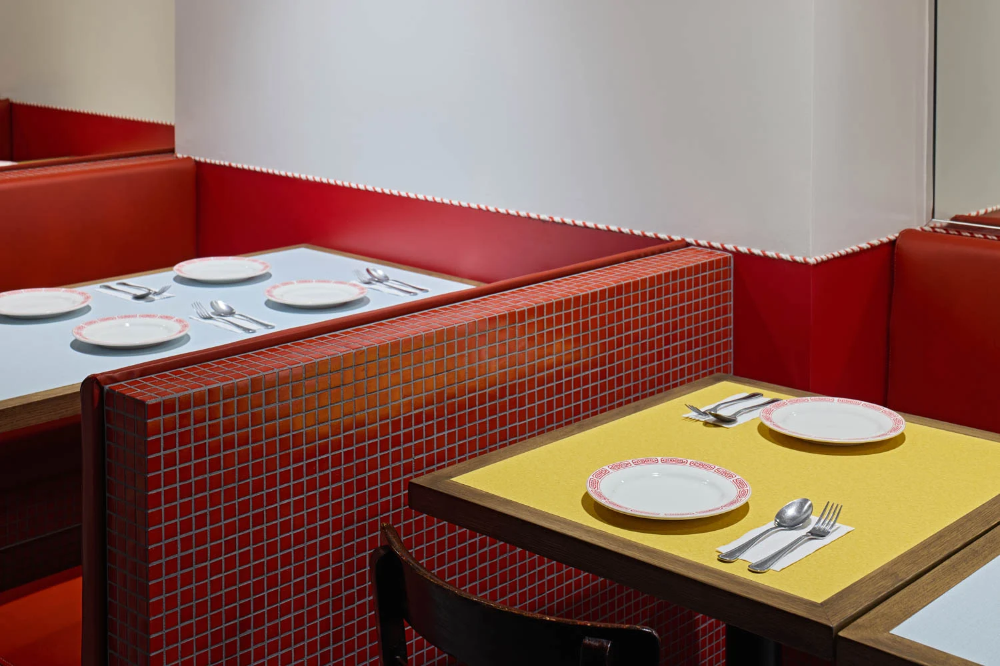
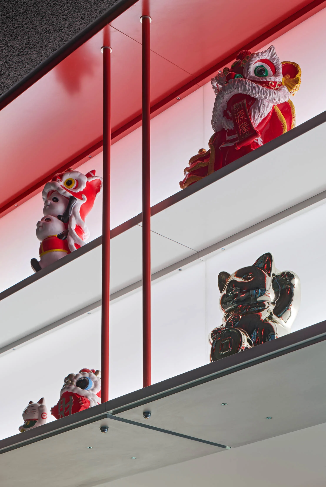
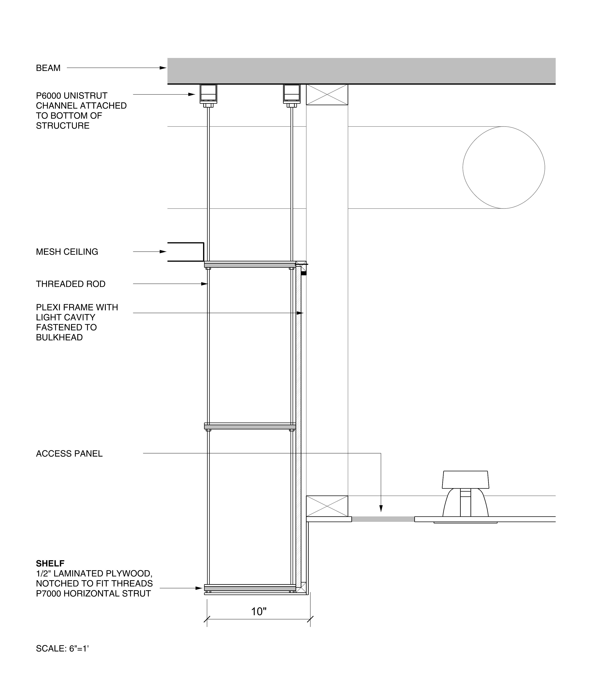
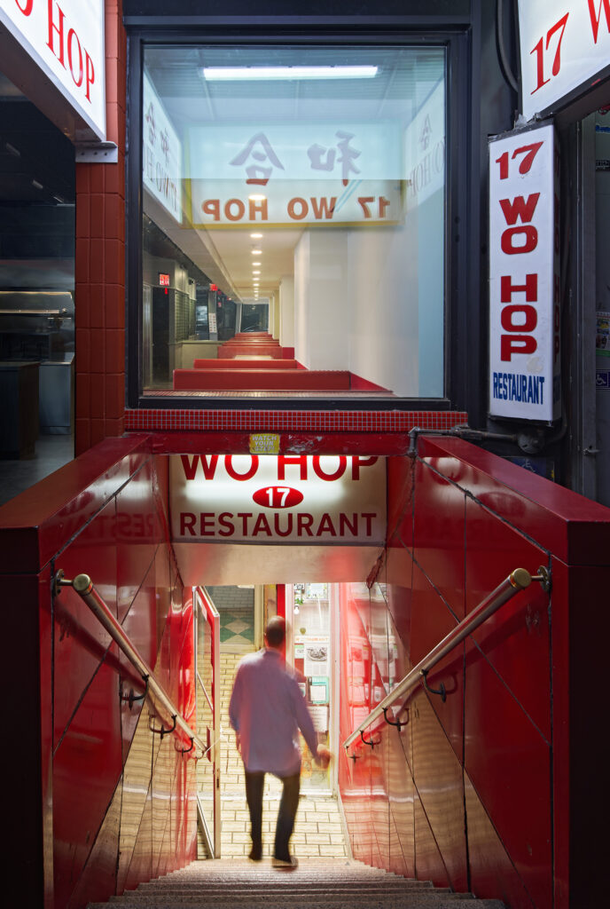
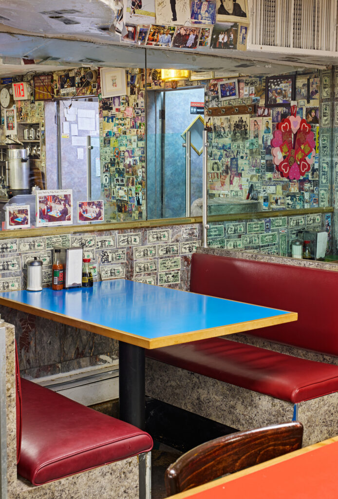

Wo Hop Upstairs
title
Wo Hop Upstairs
office
spaced agency
supervisor
Justin T.K. Ng
category
communities
+ Project Description
Role
As one of two designers within the sd phase of this project, I was responsible for generating design options for the restaurant interior (including material palettes and restaurant layout) and cladding options for the exterior.
Description from Spaced Agency
After nearly 90 years underground, Wo Hop—the James Beard American Classic—has surfaced at street level with a new dining room. Spaced Agency approached the expansion as an act of architectural archaeology.
Rather than introducing new elements, the design emerged by extending what was already there: red guardrails flanking the basement stairs evolve into booth seating, the iconic boxed awning continues through the interior as shelving, and the early 1900s brick façade is extended to the sidewalk.
In the spirit of Wo Hop’s accretive tradition—its basement walls layered with photographs and signed bills—blank walls in the new dining room await future memorabilia, inviting the restaurant’s legacy to continue growing above ground.











